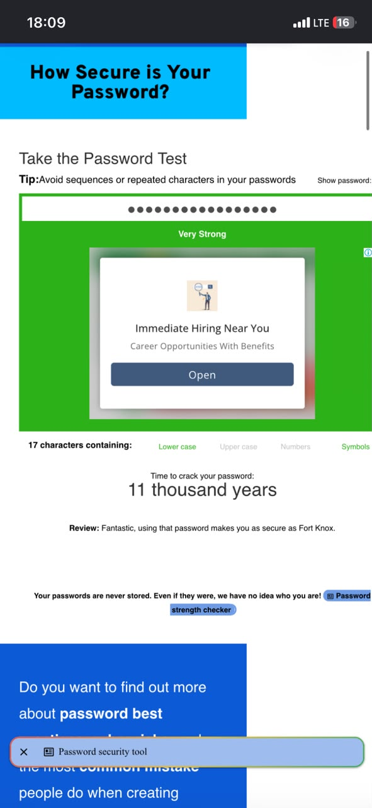

Password Security Audit
Project 02 · Account protection
Project overview
I carried out a password security audit on my own accounts to understand how strong passwords protect against hacking.
What I did
- Reviewed password length and the use of uppercase letters, lowercase letters, numbers, and symbols.
- Used a free password-strength checker to understand the strength of old passwords.
- Created stronger, unique passwords.
- Enabled Two-Factor Authentication (2FA) on my Gmail and social media accounts.
- Learned about password managers and why passwords should not be reused.
Result and learning
The exercise showed that some old passwords were weak, while stronger replacement passwords received much better estimates from the checker. I learned the importance of strong, unique passwords and 2FA in protecting accounts.
Screenshots

Back to Projects